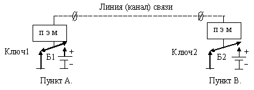
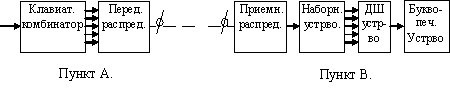
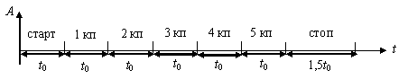
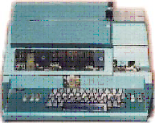
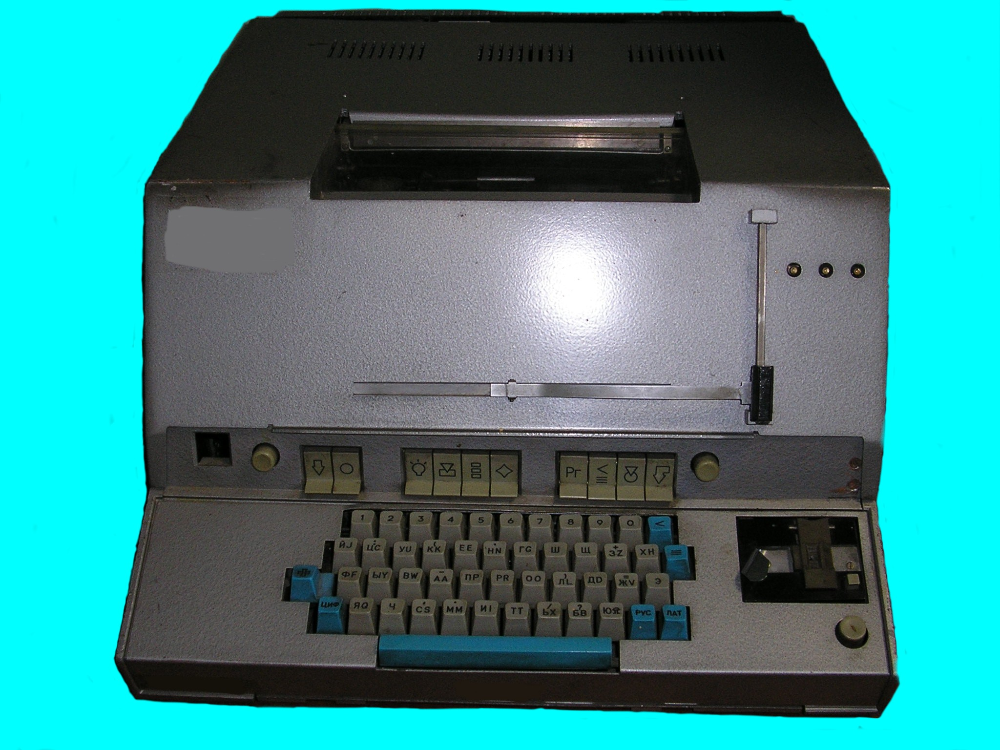
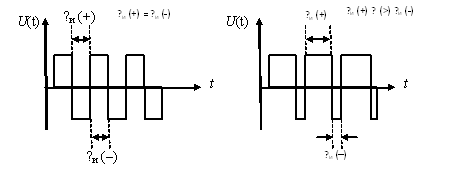
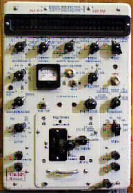
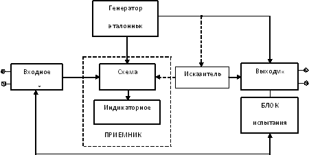

Тема №4. Устройство аппаратуры вторичного уплотнения каналов тональной частоты.
Занятие №3. Оконечная телеграфная аппаратура документальной электросвязи.
Учебные вопросы:
- Технические требования к телеграфным аппаратам.
- Назначение, состав, технические характеристики, режимы работы и функциональная схема телеграфного аппарата ЛТА-8.
- Назначение, состав, технические характеристики, режимы работы и функциональная схема телеграфного аппарата РТА-7.
- Искажения телеграфных сообщений. Методы их измерения.
Литература:
- Учебное пособие «Оконечная и коммутационная аппаратура проводных средств связи». – Мн.: БГУИР, 2010.
- Многоканальные системы передачи, Ч.1. Теоретические основы построения МСП. – Мн.: БГУИР, 2010.
- Многоканальные системы передачи (часть 2). Учебно-методическое пособие «Аппаратура МКСП с ЧРК». – Мн.: БГУИР, 2010.
- Учебно-наглядное пособие «Альбом схем аппаратуры МКСП». – Мн.: БГУИР, 2010.
1. Технические требования к телеграфным аппаратам. Методы передачи телеграфных сообщений. Общие сведения о буквопечатающей телеграфии
Телеграфный аппарат - основное средство, обеспечивающее обмен документацией. Вместе с тем по телеграфу могут вестись и переговоры. Исключительно большое значение приобрело применение буквопечатающей аппаратуры для работы по радио, что чрезвычайно повысило роль телеграфа в системе связи.
В области телеграфии наши соотечественники создали первый электромагнитный и первый буквопечатающий телеграфные аппараты, заложили основы фототелеграфии, изобрели первые воздушные и кабельные линии связи, метод одновременной передачи переменным током нескольких телеграмм по одному проводу, дуплексное телеграфирование по одному проводу.
Телеграф, как способ передачи сообщений на большие расстояния стал применяться в глубокой древности. До открытия электричества и электромагнетизма для передачи сообщений на дальние расстояния использовали различного рода звуковые и световые явления.
В конце 18 века потребность в быстрой связи возросла настолько, что за отсутствием других более совершенных способов стал развиваться “семафорный телеграф ”. Последний представлял собой устройство, позволяющее с помощью различных комбинаций из нескольких подвижных линеек или фонарей передавать буквы и цифры.
В России было разработано большое количество разнообразных конструкций оптического телеграфа. Из них особого внимания заслуживает семафорный телеграф Кулибина, разработанный им в 1794 году.
Начало 19 столетия характеризуется новыми открытиями и широко поставленными опытами по применению электричества для телеграфной связи. Так, например, Земмеринг пытался использовать электролиз воды для устройства телеграфа, а Ампер и Фехнер – действие электрического тока на магнитную стрелку. Однако все их попытки не увенчались успехом. Последнее объясняется тем, что оба способа передачи были несовершенны и для передачи каждой буквы требовался отдельный провод.
Впервые пригодный для практического использования электрический телеграф разработал и построил в 1832 году русский учёный, герой отечественной войны 1812 года, член-корреспондент Академии наук Павел Львович Шиллинг. Для работы своего аппарата Шиллинг впервые применил созданный им равномерный телеграфный код, который положен в основу всех современных телеграфных аппаратов, и подземный кабель. О работах Шиллинга знал и американский изобретатель Морзе, предложивший в 1837 году свой электромагнитный телеграфный аппарат, который лишь в 1847 году, после ряда изменений принял пригодную для практической эксплуатации конструкцию.
Большие заслуги в области усовершенствования телеграфных аппаратов и в создании первых пишущих и буквопечатающих систем принадлежат русскому учёному, академику Борису Семёновичу Якоби. Создатель первых электромоторов и первого электрохода, изобретатель гальванопластики, неутомимый исследователь теоретических и практических вопросов электротехники, Б.С.Якоби с 1838 года по 1852 год создал более восьми образцов оригинальных электрических телеграфных аппаратов.
В 1839 году Якоби построил телеграфную линию Петербург - Царское Село, оборудованную пишущими электромагнитными телеграфными аппаратами его изобретения. Б.С.Якоби на два года раньше Морзе создал первый, практически действующий пишущий электромагнитный телеграфный аппарат, а также оригинальный стрелочный аппарат, в котором для передачи применялась клавиатура с буквами. На станции приёма стрелка, вращаясь перед циферблатом, указывала букву, соответствующую букве нажимаемой клавише. Это был первый оригинальный образец массового телеграфного аппарата.
В 1850 году Б.С.Якоби создал новый, более совершенный телеграфный аппарат, в котором регистрация знаков осуществлялась с помощью типографского шрифта. Эта был первый в мире образец синхронного буквопечатающего телеграфного аппарата. Своим изобретением Б.С.Якоби на 5 лет опередил американца Юза, который взял патент на буквопечатающий телеграфный аппарат лишь в 1855 году.
В дальнейшем мысли изобретателей и инженеров были направлены на усовершенствование телеграфной аппаратуры и на увеличение производительности телеграфной связи. В результате в 1855 году выдающийся русский изобретатель Зиновий Яковлевич Слонимский создал схемы дуплексного и квадруплексного телеграфирования. Однако, вследствие косности царских чиновников, разработанные З.Я.Слонимским схемы дуплексного и квадруплексного телеграфирования, не были использованы на практике, а само предложение было “положено под сукно”. Это дало повод американцам Стирнсу и Эдиссону, через 13 лет после изобретения Слонимского, необоснованно претендовать на право считаться изобретателями дуплексной и квадруплексной схем связи.
В 1869 году русский изобретатель профессор Харьковского университета Григорий Иванович Морозов разработал систему многократного телеграфирования с помощью переменных токов разной частоты. Этим изобретением нашего соотечественника впервые была заложена идея уплотнения цепей связи с помощью переменного тока.
Другие изобретатели шли по пути увеличения скорости передачи по существующим телеграфным аппаратам. Так, например, в 1867 году был разработан аппарат Уитстона, представляющий собой усовершенствованный аппарат Морзе, у которого ручная передача заменена автоматической.
Уитстон предложил конструкции трансмиттера– устройства для автоматического считывания с перфоленты и реперфоратора- устройства для записи телеграфной информации на перфоленту. В дальнейшем их стали применять не только для увеличения скорости передачи, но и как запоминающие устройства в различных системах обработки телеграфной информации, устанавливаемых на телеграфных станциях.
Параллельно с усовершенствованием телеграфных аппаратов производились изыскания новых способов более эффективного использования проводов. В 1880 году выдающийся русский специалист по телеграфии (впоследствии командир 12-го военно-телеграфного парка) Григорий Григорьевич Игнатьев изобрёл способ, с помощью которого стало возможным по одному проводу осуществлять одновременную телеграфную и телефонную связь.
В тот же период многие изобретатели работали и над телеграфными системами, позволяющими увеличить пропускную способность телеграфной связи, используя для этой цели особые распределители, с помощью которых несколько телеграфистов поочерёдно могли вести передачу по одному проводу. В1872 году Ж.Бодо изобрёл многократный телеграфный аппарат, передающий по одному проводу одновременно два (или более) сообщения в одну сторону. Применённый Бодо принцип временного уплотнения линии остаётся одним из основных и в современной телеграфной связи. Сам аппарат Бодо имел настолько удачную конструкцию, что с небольшими изменениями эксплуатировался в телеграфии до 50-х годов 20 века.
В России многократные аппараты, значительно усовершенствованные, нашли широкое применение на дальних телеграфных связях. Первое значительное усовершенствование сделал механик Петербургского телеграфа А.Я.Яковлев, который в 1909 году практически осуществил дуплексную работу многократными аппаратами. Дуплексная работа увеличивала производительность аппарата в 2 раза и обеспечивала более устойчивую телеграфную связь через простые трансляции на большие расстояния.
В России стартстопный аппарат был изобретён в 1921 году техником А.П.Трусевичем. В 1924-1925 гг. ленинградский техник В.И.Каупуж разработал стартстопный аппарат, в основу которого был положен двукратный аппарат.
В 1929 году талантливый инженер, известный изобретатель звукового кино, профессор Александр Фёдорович Шорин разработал буквопечатающий телеграфный аппарат Ш-29, который заменил большое количество разнообразных типов однократных телеграфных аппаратов. Впоследствии был разработан значительно улучшенный аппарат Ш-32.
В 1931 году механик Леонид Иванович Тремль разработал новый стартстопный телеграфный аппарат оригинальной конструкции БТА-31, отличающийся небольшими размерами и малым весом.
В 1935 году русские инженеры разработали новый стартстопный буквопечатающий аппарат под названием СТ-35.
Работы Шорина, Тремля и других конструкторов послужили началом разработки новых образцов стартстопных аппаратов. Так, в 1937 году был создан рулонный стартстопный аппарат РТА-37 и в 1938 году - автоматизированный рулонный аппарат АРТА-38.
Таким образом, изобретение телефона не только не приостановило развитие телеграфной связи, а наоборот, вызвало появление новых типов телеграфных аппаратов.
Следует также отметить, что изобретение русским учёным Александром Степановичем Поповым в 1895 году радио в значительной мере расширило возможности использования телеграфной техники предъявив к ней ряд вновь возникших требований. Как в своё время развитие телефонии выдвинуло новые требования перед телеграфией, так и развитие радиотехники выдвинуло ряд новых проблем для осуществления телеграфной связи по радио.
В 1938 году А.Д.Игнатьев, Л.П.Гурин и Г.П.Козлов создали девятикратный аппарат высокой производительности для работы по радиоканалам. История телеграфной техники не знала аппаратов с такой большой производительностью.
Русский инженер Владимир Иванович Керби в 1946 году создал для работы по радиоканалам радиотелеграфный аппарат ТРТ-1, отличающийся высокой производительностью. В нём вместо манипуляторов и приёмников многократных аппаратов применены стартстопные аппараты.
Инженер Лев Александрович Коробков в 1948 году предложил оригинальную трёхкратную систему МТП-3, с помощью которой по одному радиоканалу обеспечивается работа трёх телеграфных аппаратов любой системы.
Этот принцип в дальнейшем был реализован в аппаратуре тонального телеграфирования, что позволило получать большое количество экономичных телеграфных каналов.
Телеграфная связь по сравнению с телефонной связью обладает следующими преимуществами:
§ обеспечивает документальный приём;
§ более эффективно использует каналы связи, например, при работе по каналам тональной частоты вместо одной телефонной связи можно получить 17 двусторонних телеграфных связей.
Понятие о кодах. Кодирование телеграфных сообщений.
Телеграфное сообщение представляет собой буквенно-цифровой текст, отдельные знаки которого кодируются и преобразуются передатчиком в первичные (исходные) электрические дискретные сигналы. Каждому знаку сообщения (букве, цифре…) соответствует определенное сочетание электрических импульсов, называемое кодовой комбинацией. Совокупность кодовых комбинаций, построенных по некоторому правилу или по таблицам соответствия, называется кодом.
Электрический импульс (–I или ~ I) наименьшей длительности, положенный в основу кода, называется элементарным импульсом или элементарной посылкой. Длительность элементарного импульса будем обозначать t0.
В телеграфии элементарные посылки могут быть токовыми и бестоковыми (при однополюсном телеграфировании) или положительными и отрицательными (при двухполюсном телеграфировании).
В обоих случаях амплитуды элементарных посылок имеют только два фиксированных значения, поэтому кодовые комбинации телеграфного сообщения могут быть представлены как комбинации двоичного кода (0,1), а сами коды называются двухэлементными (двухпозиционными) или двоичными.
По времени, которое необходимо для передачи каждой комбинации, коды подразделяются на равномерные и неравномерные.
Коды, комбинации которых имеют различное количество элементарных посылок, называется неравномерными.
Коды, все комбинации которых состоят из одинакового числа элементарных посылок, называются равномерными.
Примером неравномерного кода является код Морзе. Он является двухпозиционным. По коду Морзе каждому знаку соответствует комбинация из коротких и длинных импульсов тока. Короткий импульс (1) длительностью t0 называется точкой, а длинный, равный по длительности 3t0 - (111), называется тире. Точка и тире, составляющие комбинацию знака, отделяются друг от друга пробелами (бестоковыми посылками) - (0), равными по длительности одной точке (t0), а буквы и цифры в слове пробелами, равными по длительности трем точкам (3t0) - (000). Слова отделяются пробелами, равными по длительности 5t0 - (00000).
Самая короткая комбинация этого кода у буквы Е (с учетом пробела 4t0) – 1000, а самая длинная у 0 (нуль) 22t0 – 1110111011101110111000.
Неравномерность комбинаций – основной недостаток кода Морзе – сильно усложняет конструкцию буквопечатающих телеграфных аппаратов. Вследствие этого буквопечатающие аппараты, работающие кодом Морзе, не получили широкого распространения.
Равномерный код впервые применил наш соотечественник П.Л. Шиллинг. В настоящее время буквопечатающие телеграфные аппараты конструируются только на равномерном коде.
Примером равномерного кода является международный телеграфный код №2 (МТК-2). Он характеризуется как двухэлементный, пятизначный, равномерный. Очевидно, что максимальное количество сочетаний (Х), которое можно получить из посылок двух родов (n = 2), набранных в группы по пять (m = 5), будет равно: Х = nm = 25 = 32
Современные буквопечатающие телеграфные аппараты позволяют осуществлять передачу и прием знаков русского и латинского алфавитов, а также цифр и знаков препинания. Для передачи всех этих знаков наличие 32 комбинаций в МТК-2 явно недостаточно. Однако в буквопечатающих аппаратах имеется возможность одной и той же комбинацией обозначать различные знаки и с помощью специального приспособления, называемого регистром, отпечатывать по желанию тот или иной знак. Для перевода (смены) регистра используется одна из 32 комбинаций.
В современных буквопечатающих телеграфных аппаратах принят 5-ти элементный код МТК-2, а возможность увеличения передаваемых знаков с 32 до 96 достигается применением трех регистров – русского, латинского и цифрового. При передаче одной и той же комбинации на приемной стороне, в зависимости от признака регистра, будет отпечатана или буква русского алфавита, или латинского, или цифра.
Принцип работы электромеханических телеграфных аппаратов.
Рис. 1.1
Для осуществления телеграфной связи между двумя пунктами необходимо иметь телеграфные аппараты, линию (канал) связи и источник электрической энергии для питания телеграфных аппаратов.
Простейшая схема телеграфирования между двумя пунктами “А” и “В” представлена на Рис. 1.1. Схема состоит из телеграфного аппарата пункта “А”, телеграфного аппарата пункта “В”, источников электроэнергии (батарей) и линии связи.
Основными элементами любого телеграфного аппарата являются передатчик и приемник. Передатчиком в этой схеме является ключ, приемником электромагнит.
Рассмотрим работу данной схемы. При замыкании правого контакта ключа на пункте “А” ток идёт по цепи +Б1® правый контакт ключа 1® электромагнит пункта “А” ® линия связи ® электромагнит пункта “В” ® левый контакт ключа 2 пункта “В”® земля пункта “В” ® земля пункта “A” ® -Б1. При прохождении тока по обмоткам приемных электромагнитов аппаратов пунктов “А” и “В” создаются электромагнитные поля, и якоря электромагнитов притягиваются к сердечникам. С якорем электромагнита связаны пишущие рычаги, которые передают движения на пишущее устройство, и последнее производит запись принятого сигнала (на бумажной ленте). Из различных комбинаций посылок тока составляется телеграфный код передаваемого знака.
Очевидно, что при такой схеме связь может быть только симплексной, т.е. телеграфная связь может осуществляться одновременно только в одну сторону. Для организации дуплексной связи на каждом пункте должно быть по два аппарата: один для передачи сообщений, другой – для приема.
Современные буквопечатающие телеграфные аппараты используют равномерный пятиэлементный код. Поэтому передатчик такого аппарата состоит из клавиатурного комбинатора, который осуществляет превращение знаков текста в соответствующие им пятиэлементные кодовые комбинации механических элементов передатчика, и передающего распределителя, осуществляющего последовательную передачу в линию подготовленной комбинации в виде токовых и бестоковых посылок.
Передаваемые импульсы будут поочерёдно приняты включенным в конце линии принимающим устройством. Так как отпечатывание знака, соответствующего принимаемой кодовой комбинации, возможно только после того как приняты все пять импульсов кодовой комбинации, то, очевидно, одним из узлов приемника буквопечатающего телеграфного аппарата должно быть устройство, регистрирующее (накапливающее) импульсы, которые составляют кодовые комбинации. Такое устройство называется наборным.
При использовании пятиимпульсного кода наборное устройство должно содержать пять накопительных элементов, причем регистрация каждого импульса должна производится всегда на вполне определённом элементе: регистрация первого импульса - на первом, второго – на втором и т.д. Распределение приходящих импульсов на соответствующие накопительные элементы, осуществляет устройство, называемое приемным распределителем.
После того, как принимаемая кодовая комбинация импульсов зарегистрирована (набрана), необходимо определить какому знаку она соответствует. Это осуществляет дешифрирующее устройство.
Наконец, после определения знака, необходимо его отпечатать на ленте, что производится печатающим устройством.
Таким образом, приемник буквопечатающего телеграфного аппарата состоит из четырёх основных узлов: приемного распределителя, наборного, дешифрирующего и печатающего устройств.
Блок-схема буквопечатающего телеграфного аппарата приведена на
Рис1.2.
Скорость телеграфирования, пропускная способность телеграфных аппаратов.
Скорость телеграфирования определяется числом элементарных импульсов, передаваемых в одну секунду. Скорость телеграфирования равна 1, если в течение секунды передается 1 элементарный импульс. Единица скорости телеграфирования получила название - Бод.
Скорость телеграфирования N можно определить как величину обратную длительности элементарного импульса t0, выраженного в секундах – N = 1/t0.
Наряду со скоростью телеграфирования, выраженной в Бодах, пользуются такой характеристикой как количество знаков принимаемых и печатаемых в минуту. Для нахождения этой величины необходимо знать, какое количество элементарных посылок содержит код знака. В аппаратах типа ЛТА-8, с учетом служебных, количество импульсов равно 7.5 (контактное деление равно 7.5), тогда:
V = N * 60 / 7.5 = 400 (знаков/мин). При N = 50 Бод.
Второй важной характеристикой телеграфных аппаратов, определяющей эксплуатационные и технические качества телеграфных аппаратов, является пропускная способность. Различают теоретическую, техническую и эксплуатационную пропускные способности телеграфного аппарата.
Теоретическая пропускная способность телеграфного аппарата (А) определяется количеством передаваемых слов в единицу времени (час), при полном использовании его производительности и определяется по формуле:
A = N * 60 * 60 / (a + b) = 3600 * N / (a + b) (слов/час), где:
N – скорость телеграфирования в бодах;
а – среднее число букв в одном слове;
b – среднее число элементарных импульсов в одной букве, с учетом служебных импульсов (контактное деление передатчика).
Для русского языка и обычного содержания телеграмм, с учетом пробелов между словами, на каждое слово в среднем приходится 8,5 букв. Если b = 7.5 (ЛТА - 8), то, при N = 50Бод, А = 2800 слов/час.
При определении технической пропускной способности принимаются во внимание неизбежные при работе потери на дачу справок и различного рода служебные отметки в телеграммах, которые предусмотрены правилами телеграфной эксплуатации. Обычно такие потери составляют около 10% от общего количества переданных слов. Если учесть эти потери, то получим так называемую техническую пропускную способность (Ат), которой обладают аппараты при автоматической работе (у ЛТА-8, при
N = 50Бод, Ат » 2400-2500 слов/час).
Эксплуатационная пропускная способность (Аэ) характеризует работу телеграфного аппарата в ручном режиме и зависит от технических качеств телеграфного аппарата и от квалификации телеграфиста. Она определяется на основании статистических данных и для ЛТА-8, при
N = 50Бод, составляет Аэ » 1600 слов/час.
Классификация буквопечатающих аппаратов.
Для правильной работы приемника телеграфного аппарата каждая поступающая посылка должна фиксироваться на строго определённом элементе наборного устройства. Чтобы это обеспечить, приемный распределитель должен вращаться синхронно и синфазно с передающим распределителем.
По способу поддержания синфазности распределителей все буквопечатающие телеграфные аппараты разделяются на 2 класса: синхронные и стартстопные.
Синхронными называются такие телеграфные аппараты, распределители которых вращаются непрерывно, а синфазность их вращения поддерживается следящей системой с обратной связью.
Стартстопными называются такие телеграфные аппараты, в которых передающие и приемные распределители вращаются лишь при передаче (приеме) кодовой комбинации знака. При отсутствии передачи распределители не вращаются (стоят на «стопе»).
Синфазность вращения распределителей в стартстопных аппаратах достигается тем, что приемный распределитель запускается сразу же после начала вращения передающего распределителя и по окончании одного оборота останавливается.
Благодаря этому расхождение по фазе, возникающее между распределителями к концу оборота (за счёт инерционности и неточной установки скоростей), устраняется и, с началом следующего оборота, распределители опять находятся в фазе. Таким образом, не происходит накопления ошибки от оборота к обороту.
Чтобы обеспечить запуск и остановку приемного распределителя, передатчик телеграфного аппарата перед посылкой пятизначного кода знака посылает стартовую, а по окончании знака – стоповую посылку.
Стартовая посылка по продолжительности такая же, как и любая кодовая посылка. Продолжительность стоповой посылки в 1,5 раза длиннее. Структура сигнала, таким образом, имеет вид:
Удлинение стоповой посылки создает более благоприятные условия для повышения устойчивости связи, так как в этом случае обеспечивается более достоверная фиксация принимаемых кодовых посылок наборным устройством приемной части аппарата.
По способу использования цикла передачи (приема) буквопечатающие аппараты подразделяются на однократные и многократные.
В однократных аппаратах к передающему устройству распределителя подключается один клавиатурный комбинатор и в течение одного оборота распределителя происходит передача кодовой комбинации одного знака. Если к передающему распределителю подключить несколько клавиатурных комбинаторов, обеспечив в течение одного оборота предающего распределителя передачу кодовых комбинаций нескольких знаков, то тогда будем иметь многократную систему.
Все стартстопные аппараты являются однократными. Синхронные аппараты могут быть многократными.
2. Назначение, состав, технические характеристики, режимы работы и функциональная схема телеграфного аппарата ЛТА-8.
Ленточный буквопечатающий стартстопный телеграфный аппарат ЛТА-8 предназначен для передачи и приёма информации по телеграфным каналам, радио, радиорелейным и проводным линиям связи как в стационарных, так и в полевых условиях эксплуатации на скоростях 400 и 360 зн/мин (50 и 45 Бод).
Аппарат имеет следующие технические данные:
§ Принцип работы – стартстопный;
§ В аппарате применен пятиэлементный международный код № 2;
§ Количество регистров – 3;
§ Рабочий линейный ток - 45±5мА;
§ Скорость телеграфирования - 45, 50 Бод.
§ Скорость печати –360, 400 зн/мин;
§ Контактное деление передатчика – 7,5;
§ Искажения, вносимые передатчиком £ 7% при автоматической работе, £ 8% при работе с клавиатуры;
§ Исправляющая способность ? 35%;
§ Дальность связи: по ЛПК – до 50 км; по ПВЛС (сталь 4 мм) – до 300 км; по телеграфным каналам - в соответствии с техническими данными каналообразующей аппаратуры;
§ Скорости вращения электродвигателя – 3060, 2747 об/мин.
§ Источники питания:
§ для линейной цепи – 60 ?110В;
§ для моторной цепи: постоянное U = 110В или переменное
U =127В;
§ Потребляемая мощность - не более 90 Вт.
§ Масса аппарата - 40 кг.
В комплект телеграфного аппарата ЛТА-8 входят:
§ телеграфный аппарат ЛТА-8;
§ аппаратный щиток АЩ-8;
§ комплект запасных частей и принадлежностей;
§ клейница;
§ комплект инструмента;
§ комплект технической документации.
Основными частями аппарата являются:
1. передающая часть;
2. приемная часть;
3. движущий механизм.
Вспомогательные узлы и узлы автоматики
телеграфного аппарата.
Кроме основных узлов в телеграфном аппарате имеется ряд вспомогательных узлов:
§ для протягивания бумажной и красящей ленты;
§ перевода регистров;
§ реверсивного механизма;
§ блокировки протяжки бумажной ленты.
К узлам автоматики аппарата ЛТА-8 относятся:
§ трансмиттерная приставка;
§ реперфораторная приставка;
§ автостоп;
§ автоответчик;
§ счетчик времени работы;
§ счетчик знаков;
§ звонковая сигнализация;
§ электромагнит дистанционного управления.
Трансмиттерная приставка.
Трансмиттер предназначен для передачи в линию связи электрических посылок кодовых комбинаций, накопленных заранее на перфоленте.
Наличие пробивки в поперечном 5-ти дорожечном ряду соответствует токовой посылке, отсутствие – бестоковой.
Трансмиттер установлен над передатчиком аппарата и взаимодействует с его контактной системой, обеспечивая скорость передачи сообщений, равной технической пропускной способности аппарата.
Реперфораторная приставка.
Реперфораторная приставка размещается слева на плате приёмного устройства. Она позволяет организовать автоматический переприем телеграмм, что ускоряет их прохождение. Реперфораторная приставка может использоваться для записи на перфоленте подлежащей отправке информации при занятости каналов связи, что позволяет организовать её передачу в автоматическом режиме при освобождении канала. В качестве накопителя информации используется перфораторная лента шириной 17,5 мм.
Автоответчик.
Автоответчик барабанного типа рассчитан на 20 комбинаций и служит для автоматической передачи шифра или номера абонента в системе абоненского телеграфирования, а также для подтверждения правильности соединения с вызываемым абонентом.
Автоответчик запускается при приеме комбинации «КТО ТАМ?», следующей после комбинации перевода на цифровой регистр
(«ЦИФ ® Д» ® Кто там?), или вручную, рычагом ручного запуска «Я ЗДЕСЬ».
По окончании передачи и приема текста автоответчик аппарата автоматически переводится на регистр «РУС».
Звонковая сигнализация.
Звонковая сигнализация срабатывает при нажатии на клавишу «Ю» после последовательного перевода аппарата на латинский и цифровой регистры. При этом звонят звонки на приемном и передающем аппаратах, а на контрольных лентах передающего и приемного аппаратов отпечатывается буква «Ю» столько раз, сколько последовало нажатий на клавишу «Ю» передающего аппарата («ЛАТ» ® «ЦИФ» ® «Ю» ® звонок).
Счетчик знаков в строке.
Счетчик знаков в строке состоит из 3-х механизмов:
§ механизм счета знаков;
§ механизм сброса;
§ блокирующий механизм;
Все механизмы устанавливаются на приемной части аппарата. После 59 знака загорается сигнальная лампочка. Счет при этом прекращается. Сброс показаний счетчика производится при нажатии клавиши «Возврат каретки». Блокирующий механизм служит для блокировки механизма счета при переводе регистров.
Автостоп и счетчик времени.
Автостоп включается рычагом находящимся на тыльной стороне цоколя аппарата и служит для остановки двигателя аппарата через 1 минуту после прекращения работы приемной и передающей частей аппарата. Элементом отсчета времени является храповый механизм, соединенный с вертикальной осью приводящейся в движение от регистровой оси через червячную пару. Передаточное число червячной пары выбрано таким, что продвижение храповика на 31 зуб происходит за 1 минуту работы двигателя аппарата. После чего контактная группа автостопа отключает электродвигатель.
Для запуска аппарата, остановленного автостопом необходимо нажать клавишу «ЛАТ». При этом контактная группа, расположенная под клавишей «ЛАТ», шунтирует разомкнутые колодки автостопа, запуская электродвигатель, одновременно запускается передатчик. С первым оборотом вала передатчика происходит установка храпового механизма автостопа в исходное положение.
Счетчик времени работы аппарата конструктивно соединен с автостопом. Счетчик «СЧ-1» велосипедного типа получает вращение от храповика автостопа.
Скорость вращения вертикальной оси и число зубьев храповика подобраны так, чтобы за 1 час работы аппарата показание счетчика увеличивалось на единицу, т.е. счетчик времени показывает время работы аппарата непосредственно в часах (красная цифра показывает десятые доли часа) при скорости телеграфирования, 50 Бод. При скорости телеграфирования 45 Бод показания счетчика необходимо уменьшить на коэффициент 1,11.
Электромагнит дистанционного управления.
Устройство служит для дистанционного (из удаленного помещения) включения трансмиттера аппарата и управления работой с клавиатуры (блокировка клавиатуры). Исполнительный элемент устройства представляет собой электромагнит и связанную с ним систему рычагов.
На аппарате с устройством дистанционного управления передатчиком запрещается:
§ пользоваться рычагом непрерывного пуска передатчика;
§ включать автостоп.
3. Назначение, состав, технические характеристики, режимы работы и функциональная схема телеграфного аппарата РТА-7.
Специализированный электронно-механический телеграфный аппарат РТА-7М является рулонным стартстопным телеграфным аппаратом пятиэлементного кода и предназначен для передачи и приема информации по телеграфным каналам и линиям связи.
Аппарат обеспечивает:
1. на передаче:
- ручную передачу с клавиатуры;
- автоматическую передачу любой кодовой комбинации;
- автоматическую передачу с трансмиттера;
- передачу текста автоответа;
- дистанционное управление передачей;
- гашение перфоленты (методом накалывания) при передаче информации с трансмиттера.
2. на приеме:
- печать на рулон;
- печать на рулон и перфорацию;
- перфорацию без печати;
- остановку электродвигателя при отсутствии приема с линии в течении 60 секунд.
4. Искажения телеграфных сообщений. Методы их измерений.
Виды искажений телеграфных сигналов.
Изменение формы и длительности единичного кодового элемента телеграфного сообщения называется искажением.
Рассмотрим причины искажений телеграфных сигналов. Первым возможным источником искажений является передатчик телеграфного аппарата, если его контактная система неправильно отрегулирована (дребезг контактов). Кроме того, форма и длительность сигнала могут быть искажены в канале связи под воздействием на канал внешних помех или под влиянием процессов, происходящих в канале. Если искажения превышают допустимое значение, то знаки, получаемые на приемном аппарате, будут отличаться от переданных.
Значительное укорочение импульсного сигнала может привести к тому, что приемник не сработает от этого сигнала, т. е. воспримет токовый сигнал как бестоковый и отпечатает знак, отличающийся от переданного.
При приеме телеграфных сигналов границы единичных элементов (импульсов) определяются значащими моментами (моментами срабатывания приемного электромагнита) и значащими интервалами (межимпульсными). Несоответствие значащих моментов идеальным моментам (моментам возникновения элемента при передаче) и интервалам называется краевыми искажениями. Возможный сдвиг фронтов (краев) принимаемых импульсов относительно фронтов (краев) передаваемыхизображен на
рисунке 3.1.
Рис. 3.1.
Смещения значащих моментов или интервалов на одну и ту же постоянную величину по отношению к переданному сигналу не вызывают искажений на приеме.
Смещение значащих моментов или интервалов на различную величину объясняется, главным образом, тем, что токи линейных помех, накладываясь на токи сигналов, могут вызывать преждевременное срабатывание или запаздывание в работе приемного устройства. Вследствие смещения значащих моментов одни элементы (импульсы) удлиняются, а другие - укорачиваются.
По своему характеру краевые искажения можно подразделить на три основных вида: преобладания, характеристические и случайные искажения.
Преобладания - это вид искажений характерный для двухполюсного телеграфирования. Он выражается в постоянном увеличении (или уменьшении) длительности единичных элементов одного знака (+ или -) за счет уменьшения (или увеличения) длительности элементов другого знака (- или +) (рис.3.2).
Рис. 3.2
Преобладания при телеграфировании постоянным током могут возникнуть вследствие нестабильного напряжения источников питания.
Характеристические искажения обусловлены переходными процессами и возникают в том случае, когда при передаче различных кодовых комбинаций единичные сигналы на приемном конце не достигают (или превышают) соответствующую значащую позицию. Как известно, крутизна нарастания тока и время переходного процесса определяются постоянной времени цепи. Эта величина зависит при телеграфировании по проводу от его километрических параметров и длины, а при работе по каналам частотного телеграфирования - от ширины полосы частот канала. В общем случае можно сказать, что такие искажения появляются в тех случаях, когда время нарастания тока в цепи несоизмеримо с длительностью единичного элемента.
Необходимо также отметить, что характеристические искажения могут возникать не только на линии или в канале связи, но и в приемнике телеграфного аппарата. Это возможно в тех случаях, когда магнитный поток в электромагните приемника нарастает медленнее чем ток т.к. якорь электромагнита управляется не входным током, а магнитным потоком, то процесс его нарастания и спада определяет работу электромагнита. Для исключения характеристических искажений необходимо, чтобы скорость телеграфирования была согласована с параметрами цепи.
Случайные искажения обусловлены действием нерегулярных мешающих факторов, случайные искажения вызываются в основном помехами в каналах связи. Токи помех возникают в каналах связи из-за влияния соседних линий связи, линий электропередач, атмосферных разрядов и т. д. Суммарный ток помех, изменяющийся без какой-либо закономерности, накладывается на токи дискретных сигналов. Если направление тока помех совпадает с направлением входного тока, то дискретные сигналы будут воспроизведены с удлинением, если же направления этих токов будут противоположны, то - с укорочением. При сильных токах помех может происходить дробление сигналов, т.е. разделение их на части.
Методы измерения краевых искажений телеграфных сигналов.
Для определения величины и характера краевых искажений применяются специальные измерительные приборы: электронный измеритель сигналов “ЗИС”, измеритель краевых искажений “ИКИ”, “ЭТИ-69” и другие. Методы измерения искажений можно подразделить на аналоговый и дискретный. При аналоговом методе измерения величина искажений определяется сопоставлением длительности измеряемых сигналов с параметром прибора, меняющимся под воздействием измеряемого сигнала по определенному закону. Например, в электронном измерителе искажений типа “ЗИС-2”, где применяется аналоговый метод, длительность измеряемого сигнала сопоставляется с периодом развертывающего напряжения ЭЛТ.
Дискретный метод измерения искажений основан на представлении измеряемой величины в виде числовой последовательности, продолжительность которой определяет величину отклонения изменяемого сигнала от идеального. Элементами этой последовательности служат импульсы, следующие через строго определенные интервалы времени. Зная длительность этого интервала и, подсчитав число импульсов “n” за измеряемый промежуток времени, можно с высокой точностью определить величину искажений, перемножив эти два значения. Точность измерения при использовании дискретного метода зависит от правильного выбора интервалов между импульсами (ЭТИ-69).
Величину вносимых искажений необходимо измерять в телеграфном тракте, как по оконечной аппаратуре, так и по каналообразующей. Передатчик телеграфного аппарата по существующим нормам не должен вносить более 5% искажений, а величина искажений, вносимых каналом частотного телеграфирования, для одного канала не должна превышать 4?6%.
Для измерения величины искажений в канале частотного телеграфирования необходимо на вход канала подключить датчик стандартного испытательного текста, а к выходу канала подключить измеритель искажений.
Для измерения процента искажений, вносимых передатчиком и регулировки контактной системы передатчика, последовательно с измерителем искажений включается проверяемый аппарат. Помимо измерения общего процента искажений передатчика, измерительные приборы позволяют измерить отдельно сигналы, поступающие с каждого из шести контактов передатчика при передаче стартстопной комбинации. Эти сигналы удобно наблюдать на измерительном приборе без стопирования распределителя передачи, т.е. при непрерывном его вращении.
Прибор ЭТИ – 69.
Прибор для измерения искажений телеграфных посылок, испытания телеграфных каналов, аппаратуры и реле – ЭТИ-69 предназначен для:
§ Измерения краевых телеграфных искажений;
§ Выдачи испытательных телеграфных посылок от внутреннего (собственного) датчика;
§ Выдачи испытательных телеграфных посылок от внешнего (постороннего) датчика;
§ Испытания телеграфных поляризованных реле;
§ Испытания телеграфных аппаратов;
§ Измерения запаса устойчивости связи;
§ Испытания телеграфных каналов.
Технические возможности прибора:
1. Прибор обеспечивает измерение искажений телеграфных посылок в стартстопном режиме на фиксированных скоростях 50, 75, 100, 150, 200 Бод.
2. Прибор предусматривает измерение искажений телеграфных посылок в стартстопном режиме с плавной подстройкой скорости.
3. Прибор позволяет измерять искажения телеграфных посылок в синхронном режиме, а так же в режиме измерения длительности в плавном диапазоне скоростей от 44 до 112 Бод и возможностью плавной подстройки скоростей 150, 200, 300 Бод в пределах от +12 до –12%.
4. В приборе используется дискретный метод отсчета измеряемой величины краевых искажений через 2% в пределах всей элементарной посылки на всех скоростях и через 1% в пределах половины элементарной посылки. Отсчет величины искажений производить по высвечиваемым цифрам от 0 до ±25% с возможностью увеличения цены деления и предела измерения в 2 раза.
5. Погрешность измерительной части при измерении искажений от собственного датчика на скоростях до 200 Бод при отсчете через 2% не превышает ±2%, при отсчете через 1% - ±1%, на скоростях 200 и 300 Бод эта погрешность составляет ±3% при отсчете через 2% и ±2% - при отсчете через 1%.
6. Прибор регистрирует величину общих или стартстопных искажений либо максимальную их величину за сеанс измерений.
7. Прибор обеспечивает измерение искажений фронтов каждой из посылок стартстопного цикла.
8. Прибор позволяет разделить искажения на случайные, характеристические и преобладания с определением их знака.
9. Входное устройство прибора обеспечивает прием на скоростях до 100 Бод прямоугольных и скругленных посылок в однополюсном режиме и прием двухполюсных посылок на всех скоростях. Минимальный ток входного устройства в двухполюсном режиме 2мА, в однополюсном режиме 5мА.
10. Входное устройство прибора – симметричное и обеспечивает возможность параллельного и последовательного подключения к измеряемой цепи при следующих градациях входного сопротивления: 25, 18, 3, 1 и 0.1кОм. Входное устройство рассчитано на изменение линейных напряжений в испытуемых цепях до 138В в однополюсном режиме и до ±80В – в двухполюсном.
11. Датчик испытательных сигналов прибора выдает сигналы следующих видов:
§ Нажатие «+»;
§ Нажатие «-»;
§ «1:1»(точки);
§ «6:1»;
§ «1:6»;
§ текст «РЫ» по международному коду №2, а также комбинации «Р» и «Ы» в отдельности;
§ автоматически чередующиеся комбинации «1:5/5:1».
12. Погрешность выдаваемых прибором посылок не превышает
± 1%.
13. Датчик выдает однополюсные посылки напряжением 120 ±30В и двухполюсные посылки ± 60 ±15 В при токе нагрузки от 0 до 50мА, а также однополюсные и двухполюсные посылки напряжением 20+6(-8) В при токе нагрузки от 0 до 20мА, входное сопротивление прибора не более 200 Ом.
14. Датчик прибора имеет защиту от перегрузки, сигнализацию при коротких замыканиях и защиту от изменения полярности линейных источников питания.
15. Прибор обеспечивает возможность внесения искажений типа преобладания ступенями через 10 и 1% в сигналы собственного датчика до 95%, в сигналы постороннего датчика до 92% при установке вручную любого их знака, а с автоматической сменой знака ±89%. В стартстопном режиме величина вносимых искажений не превышает 50%.
16. Прибор обеспечивает проверку работоспособности в режиме «НА СЕБЯ»
Диапазон рабочих температур прибора от –10 до +50о С.
Масса не более 21кг.
В состав изделия входят:
§ Прибор ЭТИ – 69;
§ Блок испытания реле;
§ Соединительные шнуры и кабель;
§ Комплект запасных частей;
§ Эксплуатационная документация;
§ Чехол прибора.
Устройство и принцип работы прибора.
Основными узлами прибора являются:
§ входное устройство;
§ приемник;
§ датчик испытательных сигналов;
§ выходное реле;
§ исказитель;
§ блок питания;
§ блок испытания реле (выполнен отдельным узлом).
Упрощенная структурная схема прибора приведена на рисунке 3.3.
Рис. 3.3.
Принцип работы прибора основан на измерении временного смешения фронтов принимаемых телеграфных посылок относительно эталонных, сформированных схемой прибора.
Входное устройство прибора предназначено для преобразования измеряемых скругленных телеграфных посылок в прямоугольные. Их длительность равна длительности скругленных посылок вблизи нулевого уровня.
Далее принятые и преобразованные импульсы поступают на вход схемы сравнения приемника прибора. На эту же схему поступают эталонные импульсы от внутреннего или внешнего генератора эталонных посылок. В схеме сравнения происходит измерение смещения фронтов измеряемых телеграфных посылок относительно фронтов эталонных посылок. Измерение искажений производится путем подсчета импульсов дискретной шкалы попадающих в интервал между фронтами измеряемых и эталонных посылок. Таким образом, смещение границы измеряемой посылки относительно эталонной будет определяться количеством подсчитанных дискретных импульсов счета. Информация о количестве подсчитанных импульсов выдается на табло, где подсвечивается индикаторная лампа соответствующая определенной величине искажений. При этом, в случае искажения типа «Преобладание плюс», загораются лампочки в правой стороне индикаторного табло, в случае искажения типа «Преобладание минус» - в левой стороне индикаторного табло.